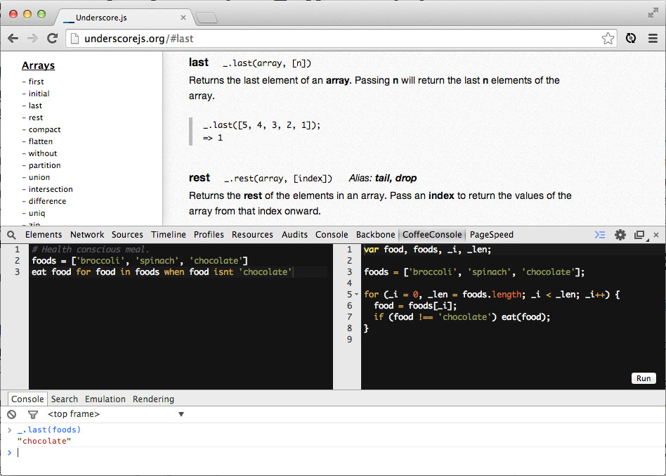

CoffeeScript
CoffeeScript is a little language that compiles into JavaScript. While there is a lot of debate online about the pros and cons of using CoffeeScript, I’ve decided to just focus on talking about some resources I used to learn this little loved and much hated language.
Coffee Console - Google Chrome extension
https://chrome.google.com/webstore/detail/coffeeconsole/ladbkfdlnaibelfidknofapbbdlhadfp?hl=en-US (Free)
You’ll want to install this Google Chrome extension before getting started. It’s essentially js2coffee in reverse. It compiles CoffeeScript into JavaScript as you type. Another advantage of using the compiler in your browser is that you can quickly pull in other libraries. For example, visiting Underscore.js allows you to write some Underscore in your CoffeeScript after running it in the console.

See CoffeeScript compiled into JavaScript instantly. After running the code, you can use available libraries in the console.
The Little Book on CoffeeScript
http://arcturo.github.io/library/coffeescript/ (Free Online / Paid Paperback)
I read through this book with my Google Chrome extension open. I took Alex McCaw’s advice and wrote every single line of the book to see how they translate into JavaScript. This book will begin to familiarize you with some essential CoffeeScript syntax (@ is this., -> is a function call, => carries over the context of this into the function, etc).
CoffeeScript Docs
http://coffeescript.org/ (Free)
The CoffeeScript docs were pretty clear and concise on the specific functionality that CoffeeScript offers and how it translates into JavaScript.
CoffeeScript Ristretto
https://leanpub.com/coffeescript-ristretto (Free or Paid)
This was my favorite CoffeeScript read by far. Reginald Braithwaite taught CoffeeScript to the reader as a new language instead of just translating CoffeeScript into JavaScript. This is the best book for anyone newer to learning JavaScript. It served as a review of the concepts in JavaScript, but skipped the weirdness that is JavaScript (unless that weirdness also existed in CoffeeScript). The book started from the very beginning with values and continued up through classes, closures, and canonicalization. It helped me think of CoffeeScript in it’s own light as opposed to just another layer of translation.
Other Resources
CoffeeScipt is super simple and can be learned by reading just one of the resources above. Here are some more resources I’ve encountered that can help you use CoffeeScript to it’s fullest potential.
More Books / Interative Learning
~Essence of CoffeeScript: Syntax Shortcuts - An interative tutorial by Carbon Five that quizzes you as you learn.~ Link no longer works. There is a repo here that may be the old tutorial.
Code School: A Sip of CoffeeScript - These 6 videos and 36 code challenges cover everything from variables and functions to converting jQuery into CoffeeScript.
Smooth CoffeeScript - An introduction to programming in CoffeeScript with an emphasis on clarity and abstraction.
CoffeeScript Cookbook - CoffeeScript recipes for the community by the community.
Tools / Guides
CoffeeCompile - This little Sublime Text plugin is a great way to check what CoffeeScript is compiling into on the fly. I already wrote about it in my guide to Sublime Text.
CoffeeScript Style Guide - Best-practices and coding conventions for the CoffeeScript programming language.
Spectacular - Spectacular is a BDD framework for CoffeeScript and JavaScript that attempts to bring the power of RSpec to JavaScript.
CoffeeLint - CoffeeLint is a style checker that helps keep CoffeeScript code clean and consistent.
Blog Posts
CoffeeScript Tricks - Quick blog post covering some tricks that aren’t covered in the docs.
~JavaScript closures, CoffeeScript do, and dont’s - This blog post explains handling closures in CoffeeScript.~ Link no longer works
~Destructuring CoffeeScript one sip at a time - Destructuring in CoffeeScript is an elegant feature that makes the language feel closer to pure functional languages such as Haskell.~ Link no longer works
Node with benefits: Using CoffeeScript in your stack - Some examples on how to utilize CoffeeScript in a Node environment.
CoffeeScript’s Existential Operator - Using CoffeeScript’s existential operator, which helps to remove most null and undefined checks.
Some Real World Examples of jQuery and CoffeeScript - This post gives a short introduction to CoffeeScript and shows the use of CoffeeScript and jQuery.
Module Pattern in JS and CoffeeScript - This post looks at the the Module Pattern, pioneered by Douglas Crockford, in both JavaScript and CoffeScript.
10 CoffeeScript Feature You Might Not Know - A few CoffeeScript features that are not that well known.